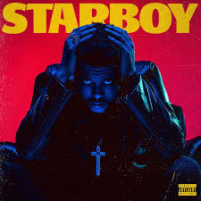

Álbuns Mais Famosos
Polemicas
THE WEEKND
Biografia
Músicas

STARBOY
AFTER HOURS
Persona e alter-ego
Série "The Idol"
Grammys
Letras Machistas"
Série "The Idol"
Abel Makkonen Tesfaye, nascido em Toronto, no Canadá, no dia 16 de fevereiro de 1990, é mais conhecido ao redor do mundo como The Weeknd. O músico e produtor musical, do gênero R&B, é conhecido pelo uso de uma sonoridade bastante atmosférica em suas canções.
Tesfaye cresceu ouvindo uma variedade de gêneros musicais, incluindo soul, quiet storm, hip hop, funk, indie rock e pós-punk. Após uma adolescência conturbada, aos 17 anos, Abel decidiu abandonar a escola e sair de casa da mãe. Esse período foi complicado, como o próprio admitiu ao New York Times: “A minha mãe olhou para mim como se tivesse falhado”.
Inclusive, o músico conta que adotou seu nome artístico "The Weeknd" após sair do colégio junto com um colega de sala e "saiu de casa em um fim de semana ("weekend", em inglês) e nunca voltou". A grafia do nome foi alterada para "The Weeknd" para evitar problemas de direitos autorais e marca registrada com uma banda canadense já existente e denominada "The Weekend".
Ao final de 2010, lançou em sua conta do YouTube várias canções sob o seu pseudônimo de "The Weeknd", mantendo sua verdadeira identidade no anonimato. Em 2011, lançou três mixtapes, de nove canções cada, que estão disponíveis apenas para download digital: House of Balloons, Thursday e Echoes of Silence. Os três lançamentos foram muito bem recebidos pela crítica.
Em 2012, lançou um álbum compilatório, Trilogy, que consiste em versões remasterizadas das canções contidas nos mixtapes, bem como três canções novas. No ano seguinte, publicou seu primeiro álbum de estúdio, Kiss Land.
O segundo álbum, Beauty Behind the Madness, foi o primeiro do cantor a chegar à primeira colocação na tabela Billboard 200. Inclui os singles de primeira colocação nos EUA e Reino Unido "Can't Feel My Face" e "The Hills", junto com o single de top-cinco (também nos EUA e no Reino Unido) "Earned It". As três canções estiveram simultaneamente nas três primeiras colocações na tabela Billboard Hot R&B, fazendo de Tesfaye o primeiro artista da história a realizar tal proeza.
Em 2016, lançou o seu terceiro álbum de estúdio, Starboy, cujo tema homônimo se tornou o terceiro número 1 de Tesfaye nas tabelas musicais principais dos Estados Unidos e Reino Unido.
Em março de 2018, lançou de surpresa o EP My Dear Melancholy que chegou ao topo da parada de álbuns nos Estados Unidos.
Save Your Tears
Blinding Light
Starboy
Die for you
Popular
Timeless
I Feel it Coming
After Hours
Voltar Para Página Inicial